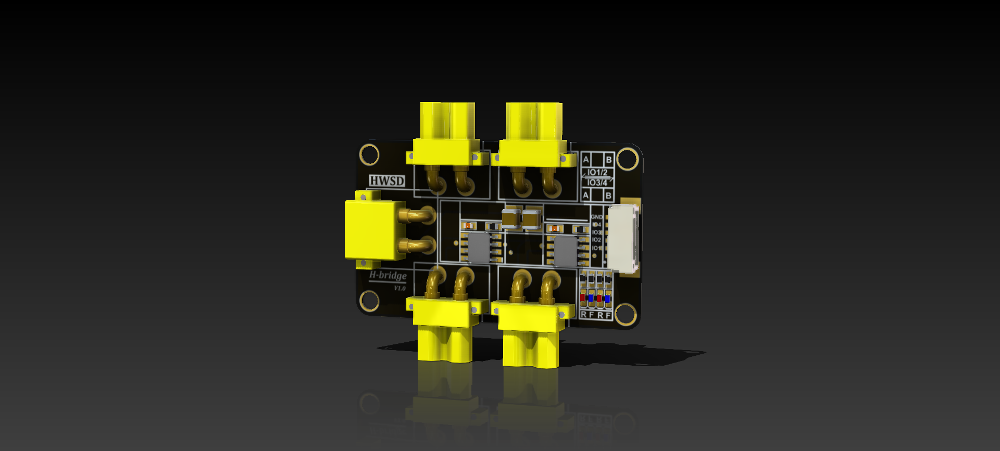

HWSD-H桥控制器
概念图

原理图
HWSD-H-bridge.pdf
功能说明
板载2个DRV8871 H桥芯片，用于电动推杆等正反通电执行器控制。
机械参数
| type |
H-bridge |
|
| unit |
mm |
mil |
| space length |
50.00 |
1968.50 |
| board length |
50.00 |
1968.50 |
| fixing length |
44.92 |
1768.50 |
| space width |
42.82 |
1685.83 |
| board width |
30.00 |
1181.10 |
| fixing width |
24.92 |
981.10 |
| space thick |
7.00 |
275.59 |
| board thick |
1.60 |
62.99 |
| fixing hole |
3.00 |
118.11 |
方向配置
| IN1 |
IN2 |
OUT1 |
OUT2 |
Description |
| 0 |
0 |
High-Z |
High-Z |
Coast; H-bridge disabled to High-Z |
| 0 |
1 |
L |
H |
Reverse (Current OUT2 → OUT1) |
| 1 |
0 |
H |
L |
Forward (Current OUT1 → OUT2) |
| 1 |
1 |
L |
L |
Brake; low-side slow decay |
ibom
ibom-for-HWSD-H-bridge.html
Datasheet
DRV8871.pdf